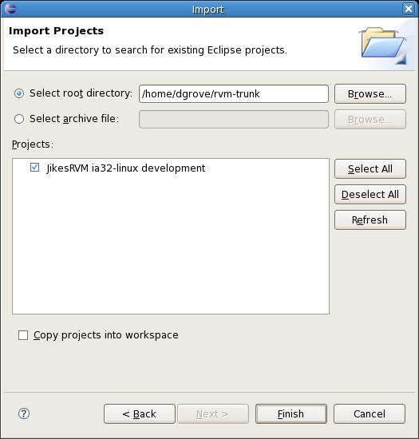

RVM : Editing JikesRVM in an IDE
This page last changed on Sep 17, 2007 by ianrogers.
One goal of the JikesRVM project over recent years has been the ability to develop JikesRVM in a development environment such as Eclipse. This has been possible for the MMTk component since 2005, and as of early 2007 (release 2.9.0) it is possible to work with the majority of the JikesRVM codebase in Eclipse and similar environments. With Jikes RVM release 2.9.1, setting up your Eclipse environment to work with Jikes RVM became even easier.
Editing JikesRVM in Eclipse
These instructions assume you are working with Jikes RVM version 2.9.1 or later.
- Create a JikesRVM source tree either via SVN checkout or untar-ing a distribution.
$ svn co https://jikesrvm.svn.sf.net/svnroot/jikesrvm/rvmroot/trunk jikesrvm
- From the top-level directory you just created, build Jikes RVM for any valid host.name and config.name pair. Typically, the most useful configuration would be development.
$ cd jikesrvm
$ ant -Dhost.name=ia32-linux -Dconfig.name=development - From the same top-level directory, build the eclipse-project target using the same host.name and config.name pair.
$ ant -Dhost.name=ia32-linux -Dconfig.name=development eclipse-project
- Import the newly created Eclipse project into your Eclipse workspace.
- From Eclipse, select File-->Import
- Select "Existing Projects Into Workspace"

- Browse to find the top-level directory.
- Select the project (in this case JikesRVM ia32-linux development)
 - Hit Finish
Editing JikesRVM in NetBeans
- Follow the instructions for Eclipse including building the eclipse project with ant
- Install the Eclipse project importer
- Select File-->Import Project-->Eclipse Project
- Choose to import project ignoring project dependencies
- Select the top-level directory you created with the JikesRVM in as the project to import
- Select a new folder as the destination (workspace) for the import
- Hit Finish
{kind=link}